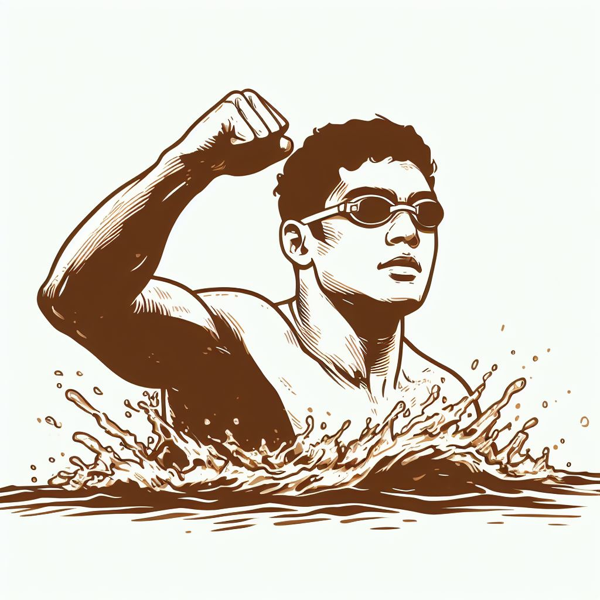

¡Hola! Soy David Andres Lopez Galán, tengo 21 años, apasionado por la programación y la ingeniería en software, Nací el 30 de agosto del 2002 en Riobamba, donde resido actualmente.
Soy una persona dedicada, creativa y comprometida con mi trabajo. Mi objetivo principal es Crecer profesionalmente dentro del campo de la programación para poder desempeñar un papel fundamental en la sociedad.
EDUCACION Y EXPERIENCIA

Actualmente estudio la carrera de ingeniería en Software en la Escuela Superior Politécnica de Chimborazo, cursando el 5to semestre.
HABILIDADES
Mis habilidades incluyen fluidez en inglés, manejo de C++ y bases de datos de manera basica. Además de siempre estar buscando oportunidades para aprender y crecer en nuevas áreas.
PASIONES Y AFICIONES

Fuera del ámbito profesional, disfruto Nadar, tocar la guitarra, escuchar música y hacer ejercicio con pesas. También, puedes encontrarme paseando a mi mascota ya que los animales siempre han sido una parte esencial en mi vida.
CONTACTO
Estoy abierto a nuevas oportunidades y colaboraciones. Si te gustaría ponerse en contacto conmigo, no dudes en escribirme a través de los medios detallados en la página.
¡Espero que disfrutes explorando mi página web personal y conozcas más sobre mi trayectoria y pasiones!